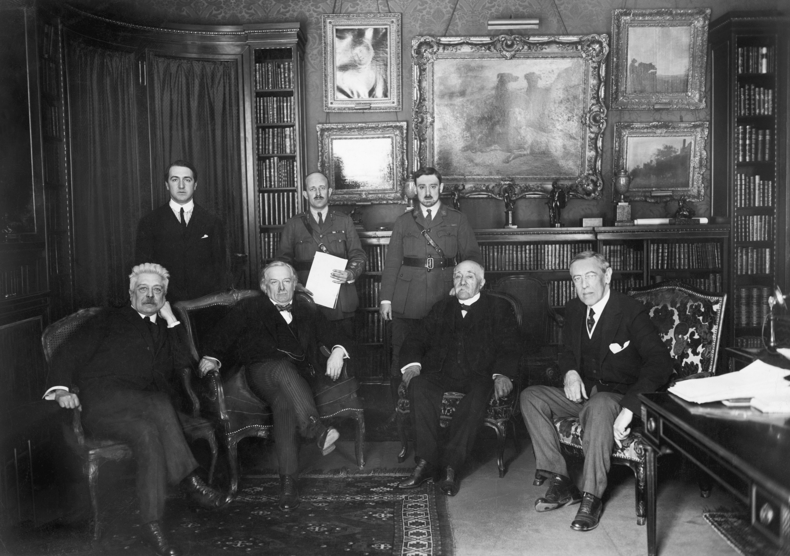
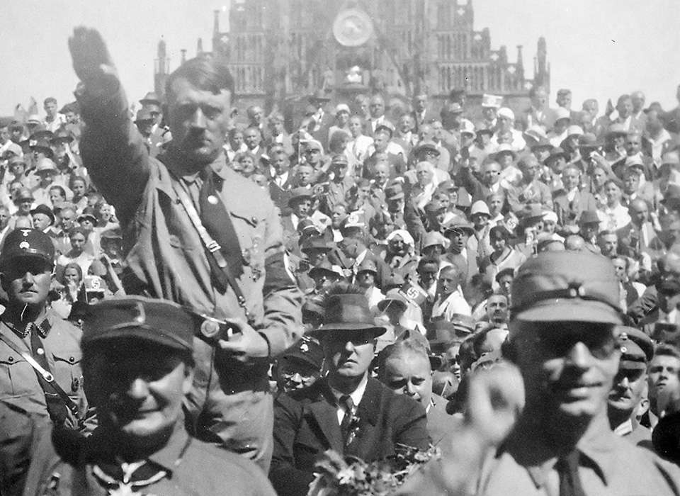
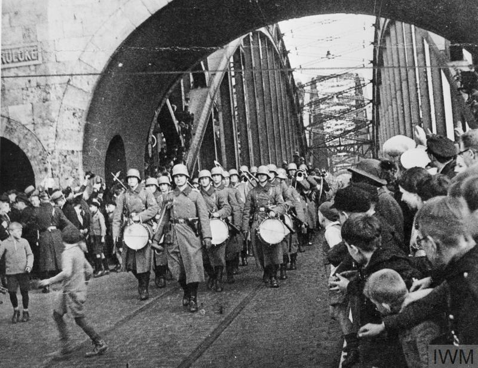
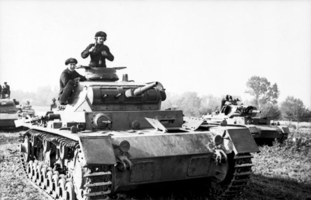

Page 1: Causes of World War II
Essential Question: What were the long-term and short-term causes of WWII?
Answer to the Essential Question
The long-term causes of World War II came from the instability left behind by World War I.
The Treaty of Versailles punished Germany harshly, which created resentment and weakened the Weimar Republic.
The Great Depression made conditions worse by causing unemployment, political extremism, and public desperation.
In that environment, fascist leaders such as Adolf Hitler gained support by promising national recovery, military strength, and expansion.
The short-term causes were the repeated acts of aggression that followed, including the remilitarization of the Rhineland,
the annexation of Austria, the seizure of the Sudetenland, and the invasion of Poland.
These actions succeeded partly because the League of Nations was weak and Britain and France used appeasement instead of force.
Together, these conditions allowed conflict to grow until another world war became unavoidable.
Long-Term Causes
- Treaty of Versailles and German resentment
- Weaknesses of the Weimar Republic
- Rise of fascism and dictatorship
- Economic collapse during the Great Depression
Short-Term Causes
- Failure of appeasement
- Weak League of Nations
- German expansion in Europe
- Final trigger: invasion of Poland in 1939
Artifacts

Artifact 1
Treaty of Versailles and the Paris Peace Conference
This artifact represents the peace settlement that followed World War I. The Treaty of Versailles blamed Germany for the war,
forced it to pay reparations, reduced its military, and took away territory. Many Germans saw the treaty as humiliating and unfair.
That resentment later helped extremist leaders gain support by promising to overturn the treaty.
Source

Artifact 2
The Great Depression in Germany
This image shows the social effects of economic collapse. During the Great Depression, millions lost jobs and faith in democratic government.
In Germany, economic suffering made radical political parties look more appealing because they offered simple answers and strong leadership.
The depression did not cause war by itself, but it helped create the conditions in which fascism could rise.
Source

Artifact 3
Rise of Fascism in Germany
Adolf Hitler and the Nazi Party used propaganda, nationalism, fear of communism, and anger over Germany's problems to win support.
This rally image shows how fascism relied on mass politics, emotional appeals, and total loyalty to the leader.
The rise of fascism was a major cause of WWII because it encouraged militarism, dictatorship, and expansion rather than compromise.
Source

Artifact 4
Appeasement and the Munich Agreement
This artifact shows the policy of appeasement, when Britain and France allowed Hitler to take the Sudetenland in 1938 in the hope of avoiding war.
Instead of stopping aggression, appeasement convinced Hitler that the Western powers would not resist him. This made further expansion more likely.
It was one of the clearest short-term causes because it failed to stop Nazi Germany before the invasion of Poland.
Source

Artifact 5
Remilitarization of the Rhineland
In 1936, Hitler sent troops into the Rhineland, directly violating the Treaty of Versailles and the Locarno Treaties.
Britain and France did not respond militarily, which showed that international agreements could be broken without serious consequences.
This was important because it increased German confidence and weakened the remaining barriers to expansion.
Source

Artifact 6
Invasion of Poland, 1939
Germany's invasion of Poland on September 1, 1939, is widely recognized as the immediate event that began World War II in Europe.
After this attack, Britain and France declared war on Germany. This artifact matters because it marks the point when the earlier causes,
including diplomacy failures and expansionist policies, turned into open global conflict.
Source
Cause-and-Effect Timeline
1919: Treaty of Versailles leaves Germany humiliated and politically unstable.
1929: The Great Depression deepens unemployment and social crisis.
1933: Hitler becomes chancellor and begins building a dictatorship.
1936–1938: Germany remilitarizes the Rhineland and annexes Austria and the Sudetenland.
1939: Germany invades Poland, beginning World War II in Europe.